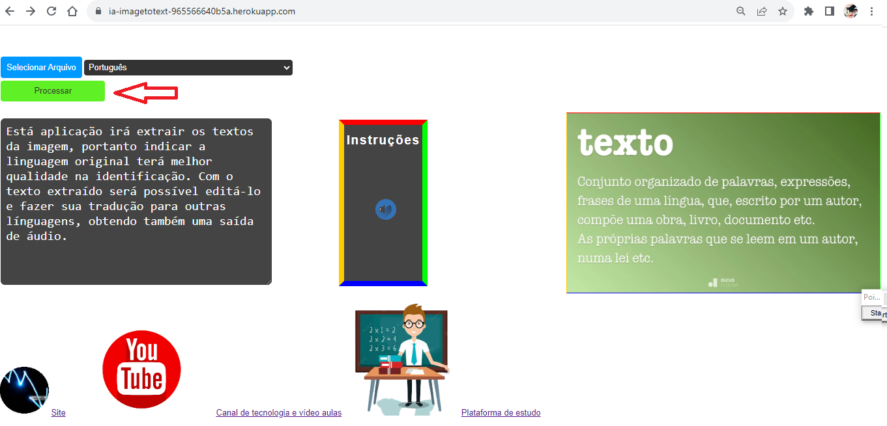
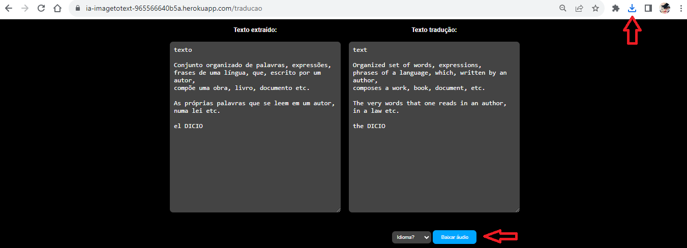

Transforme sua experiência com texto e idiomas com nossa ferramenta de IA de última geração.
📸 Extração de Texto a Partir de Imagens e Arquivos Digitalizados
Transforme qualquer imagem ou documento digitalizado em uma fonte de informação editável e traduzível com nossa avançada aplicação de Inteligência Artificial. Adeus ao tedioso processo de digitar manualmente!
🔡 Edição Fácil e Eficiente
Após a extração de texto, você pode facilmente editar o conteúdo como desejar. Faça correções, adições ou eliminações com simplicidade e rapidez.
🌍 Tradução para Até 10 Idiomas
Oferecemos suporte para tradução em tempo real para uma variedade de idiomas, tornando a comunicação global mais acessível. Traduza seu texto para:
🔊 Geração de Áudio da Tradução
Vá além do texto e dê vida às suas palavras! Com nosso recurso de geração de áudio, você pode ouvir a tradução em qualquer idioma desejado. Ideal para apresentações, podcasts e muito mais.
Com nossa aplicação, você pode extrair, editar, traduzir e até mesmo ouvir o texto em vários idiomas, tornando a comunicação global mais acessível e eficiente. Não perca tempo, experimente agora e aproveite a facilidade da IA!
✨ Por que escolher nossa aplicação?
🌐 Conectividade Global
Estamos tornando o mundo mais conectado, eliminando barreiras linguísticas e facilitando a comunicação internacional. Seja para fins pessoais ou profissionais, nossa aplicação de IA é a escolha inteligente.
📢 Experimente Agora!
Transforme a maneira como você lida com texto e idiomas. Experimente nossa aplicação de Inteligência Artificial hoje e descubra como a tecnologia pode simplificar suas tarefas diárias.
Passo 1 (Botão azul): Click em "Selecionar arquivo"
Ao selecionar o arquivo será feito o upload do mesmo para aplicação

Passo 2: Será mostrada a tela miniatura com a imagem que foi carregada
Com a miniatura da imagem apresentanda em tela teremos certeza que a mesma foi carregada

Passo 3 (Combo de seleção de limguagem): Selecione a linguagem correspondente no texto apresentado na miniatura da imagem
A seleção da linguagem correspondente na imagem fará com que a aplicação extraia o texto com maior precisão e também ira garantir a tradução do texto, posteriormente, com a correspondencia de origem correta.

Passo 4 (Botão verde): Click em "Processar"
A extração do texto será apresentada na caixa de texto extraído que poderá ser feita edições
Passo 5 (Combo de seleção de idioma): Selecione o idioma para tradução
Ao selecionar o idioma um botão de traduzir será apresentado

Passo 6 (Botão azul): Click em "Traduzir"
Será apresentado na caixa de texto tradução, o texto traduzido para a linguagem selecionada, e em seguida o botão de traduzir ficará oculto novamente.

Passo 7 (Botão azul): Click em "Baixar áudio"
Está opção fará download de arquivo mp3 com o áudio gravado da tradução
